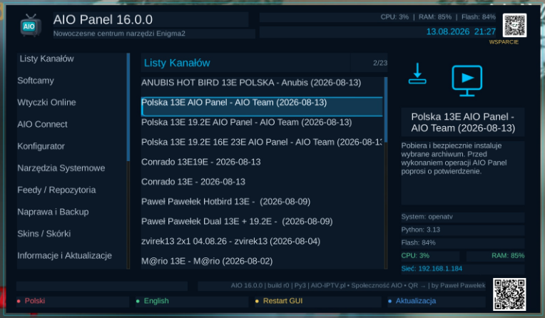
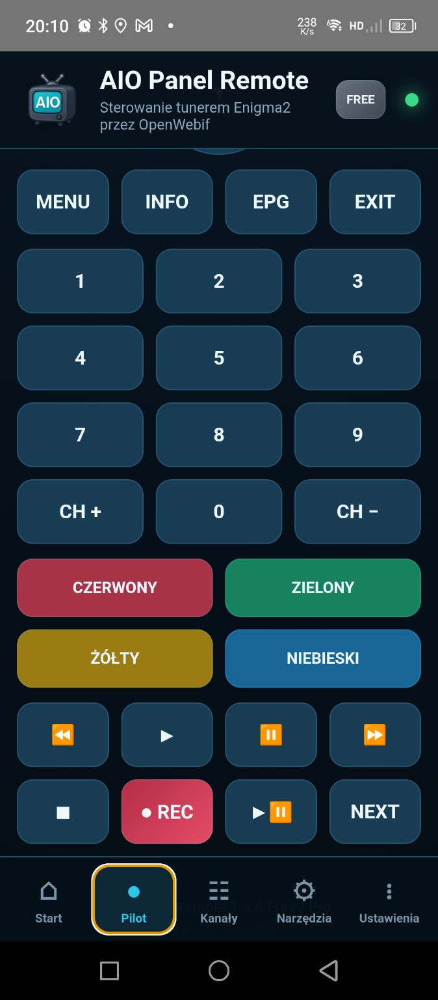
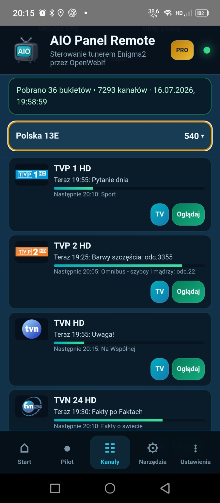
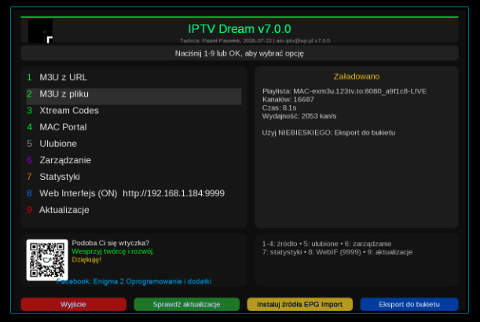
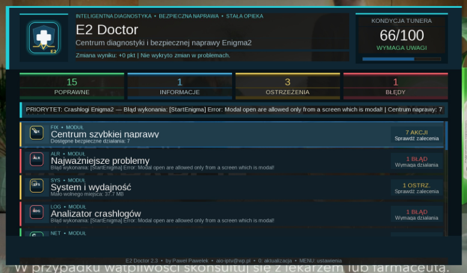

DUŻA AKTUALIZACJA
AIO Panel 16.0.0
Modularny rdzeń, bezpieczniejsze źródła i aktualizacje, SHA-256, centralny logger, wyszukiwarka, ulubione, historia, Health Check, Stable/Test oraz rozbudowany Self-Test.
Opis i pobieranieWitam na mojej stronie Paweł Pawełek
Enigma2 • Android • Windows • pomoc
Aktualne pliki, jasne wymagania, instrukcje krok po kroku oraz narzędzia pomagające dobrać właściwy projekt i przygotować kompletne zgłoszenie błędu.

 ZBIÓRKA CELOWA
ZBIÓRKA CELOWA
Rozwój AIO IPTV PL i darmowych projektów Enigma2
Po usunięciu grupy strona AIO IPTV PL oraz Społeczność AIO stały się głównym miejscem publikowania aktualizacji, plików, poradników i pomocy dla użytkowników Enigma2. Zbiórka pomaga utrzymać to zaplecze i rozwijać kolejne funkcje.
Wsparcie jest dobrowolne. Większość projektów nadal pozostaje dostępna bezpłatnie.
Społeczność AIO • niezależna przestrzeń użytkowników
Publikuj problemy, dodawaj zdjęcia i zrzuty ekranu, komentuj wpisy oraz pomagaj innym użytkownikom Enigma2. To miejsce działa bezpośrednio na AIO-IPTV.pl.
Zakładka „Społeczność” jest kontynuacją grupy „Enigma 2 Oprogramowanie Dodatki”.
Aktywność Społeczności AIO



↔ Przesuń galerię, aby zobaczyć pilot i listę kanałów.
Wyróżniona aplikacja Android
Steruj tunerem Enigma2 z telefonu lub tabletu. Korzystaj z pilota, list kanałów, EPG, piconów oraz streamingu SAT i IPTV.
🔐 Dostęp zdalny realizuj przez ZeroTier lub prywatny VPN — bez publicznego wystawiania portów OpenWebif.
Szybki start
Kompletne centrum narzędzi Enigma2.
Diagnostyka i bezpieczna naprawa.
Synchronizacja bez utraty układu bukietów.
Pilot, EPG, picony i streaming.
Multi-Click z instrukcjami dla modeli.
Poradniki i CamBridge PL.
Generator kompletnego raportu.
Python, system i wymagania.
Najnowsze wydania
Modularny rdzeń, bezpieczniejsze źródła i aktualizacje, SHA-256, centralny logger, wyszukiwarka, ulubione, historia, Health Check, Stable/Test oraz rozbudowany Self-Test.
Opis i pobieranie
M3U, Xtream, portale MAC, szybki eksport, EPG i picony.
Zobacz szczegóły →
Obsługa lamedb5, wielu satelitów, #SERVICE, backup i rollback.
Zobacz szczegóły →
Aplikacje
Pomoc
Narzędzia użytkownika
Studio AIO-IPTV.pl
Nie znalazłeś odpowiedzi?
W Społeczności AIO możesz opisać tuner, system i błąd, dołączyć zrzut ekranu oraz otrzymać odpowiedź od innych użytkowników.
Wklej polecenie w terminalu OpenWebif, SSH lub Telnet. Po instalacji wykonaj Restart GUI.
wget -q -O - https://raw.githubusercontent.com/OliOli2013/PanelAIO-Plugin/main/installer.sh | /bin/sh